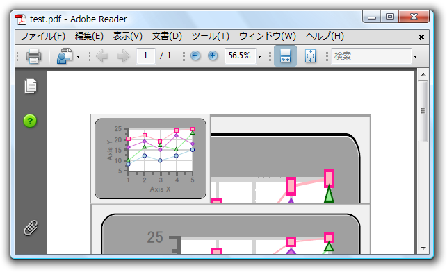

全て展開
全て展開 すべて折りたたむ
すべて折りたたむC1Pdf ドキュメントに画像を追加するのは簡単であり、すべての操作はDrawImage メソッドで行います。
DrawImage メソッドは、指定した位置に指定した画像を描画し、さらに画像の配置とスケーリングの制御を提供する引数を備えています。たとえば以下のコードでは、同じ画像を３種類の方法で描画します。
Visual Basic コードの書き方
| Visual Basic |
コードのコピー
|
|---|---|
Dim rect As RectangleF = C1PdfDocument1.PageRectangle rect.Inflate(- 72, - 72) '四角形に合わせて画像を引き伸ばします。 C1PdfDocument1.DrawImage(pictureBox1.Image, rect) '画像を四角形の中央に配置し、縦横比を維持しながらスケーリングします。 C1PdfDocument1.DrawImage(pictureBox1.Image, rect, ContentAlignment.MiddleCenter, C1.C1Pdf.ImageSizeModeEnum.Scale) '画像を四角形の左上に描画します。 C1PdfDocument1.DrawImage(pictureBox1.Image, rect, ContentAlignment.TopLeft, C1.C1Pdf.ImageSizeModeEnum.Clip) |
|
C# コードの書き方
| C# |
コードのコピー
|
|---|---|
RectangleF rect = c1PdfDocument1.PageRectangle; rect.Inflate(-72, -72); //四角形に合わせて画像を引き伸ばします。 c1PdfDocument1.DrawImage(pictureBox1.Image, rect); //画像を四角形の中央に配置し、縦横比を維持しながらスケーリングします。 c1PdfDocument1.DrawImage(pictureBox1.Image, rect, ContentAlignment.MiddleCenter, C1.C1Pdf.ImageSizeModeEnum.Scale); //画像を四角形の左上に描画します。 c1PdfDocument1.DrawImage(pictureBox1.Image, rect, ContentAlignment.TopLeft, C1.C1Pdf.ImageSizeModeEnum.Clip); |
|
 このトピックの作業結果
このトピックの作業結果

C1Pdf では、ビットマップ画像やメタファイル画像などの .NET Image オブジェクトを描画できます。 メタファイルは、ビットマップに変換せずにドキュメント内に描画されるため、可能な限りの最高の解像度を保持します。グラフまたは図面を PDF ドキュメントに追加する場合、メタファイルのほうがビットマップ画像より優れています。なお、C1PDFでは、EMF+ メタファイルに対応しています。
ビットマップ画像は、C1Pdf により自動的に管理されます。ページヘッダなどに同じ画像を複数回描画するとき、画像の１コピーのみを PDF ファイルに保存します。画質とファイルサイズをトレードオフできる C1PdfDocumentBase.ImageQuality プロパティを使用し、画質を制御できます。